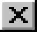
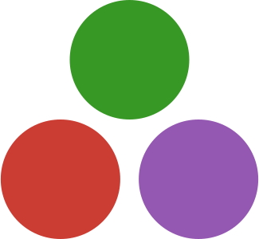
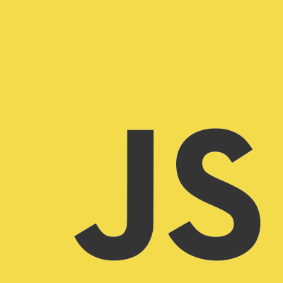

Welcome to my website!
Here you can find some Information about me, my work, and some external links to relevant pages.
As an exercise in web design and programming, I designed this webpage to look and feel like a Windows 95 desktop, including some dynamic styling to make the experience smooth on mobile as well.
Clicking on the desktop icons will open windows with the relevant information, and the Start Menu button in the bottom-left corner will open a dialog with some options, and a button to reopen this Welcome window.
The windows are resizable by clicking and dragging on the edges and corners, and can be moved by dragging from the title bar.
For mobile devices, the windows will be fixed in place at a defined size because of the limited screen real estate.
Multiple windows can be opened, and clicking on a window, or its tab in the taskbar, will bring it to the front of the stack.
Clicking the "X" button on the top-right corners of windows will close them.
This is a work-in-progress, and I would appreciate feedback. If you have a GitHub account, feel free to open an issue at the git repository for this static website, if you find any problems.
Hello!
My name is Dawson Finklea, and I am an IT professional with a B.S. in Computer Science.
I have been an active developer for personal, academic, and professional projects for almost 5 years, with experience in multiple languages like Python and C#, to more special-purpose languages like Julia.
I also have an ongoing project to start a side business around my skill and love for classic cars by offering private tours in a vintage Volkswagen Thing

